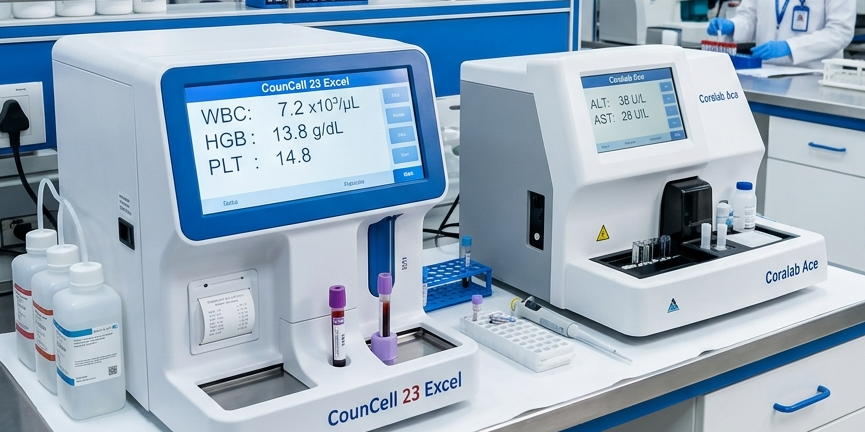
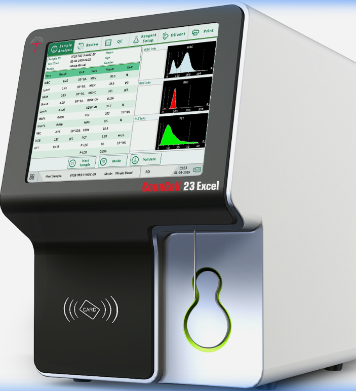
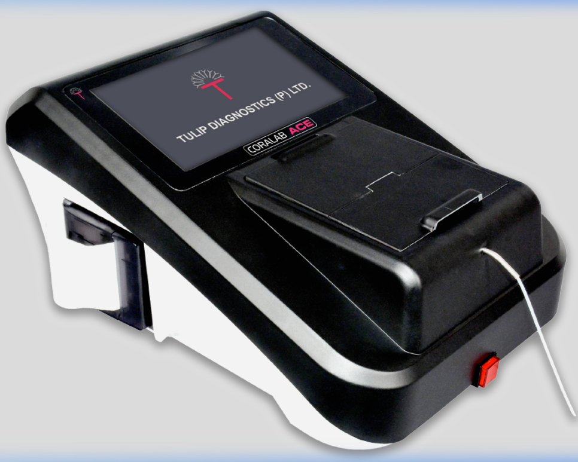
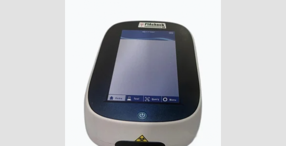

अत्याधुनिक स्वचालित एनालाइजर, दक्ष प्राविधिक, र सोही दिन भरपर्दो रिपोर्टिङ – भरतपुर-७, क्यान्सर अस्पताल सामुन्ने, चितवन। (Advanced automated diagnostic analyzers and reliable reporting in Bharatpur).

क्लिनिकल प्याथोलोजी, बायोकेमिस्ट्री, हेमेटोलोजी र इम्युनोलोजीका आधुनिक परीक्षणहरू पूर्ण शुद्धताका साथ सम्पन्न गरिन्छ।
रक्त अल्पता (Anemia), संक्रमण, प्लेटलेट्स र रक्त कोषहरूको विस्तृत २४-प्यारामिटर ५-पार्ट डिफरेन्सियल विश्लेषण।
परीक्षण सूची हेर्नुहोस् (CBC, ESR, Hb)कलेजो (LFT), मृगौला (KFT), इलेक्ट्रोलाइट्स र रगतमा विभिन्न प्रोटिन तथा इन्जाइमहरूको स्वचालित जाँच।
परीक्षण सूची हेर्नुहोस् (LFT, KFT, Urea)TSH, Free T3, Free T4 तथा अन्य हर्मोनल असन्तुलनको संवेदनशिल फ्लोरोसेन्स इम्युनोएसे परीक्षण।
परीक्षण सूची हेर्नुहोस् (TSH, FT3, FT4)फास्टिङ, पि.पि. ब्लड ग्लुकोज तथा विगत ३ महिनाको औषत सुगर मापन गर्ने HbA1c परीक्षण।
परीक्षण सूची हेर्नुहोस् (Glucose, HbA1c)कोलेस्ट्रोल, ट्राइग्लिसराइड्स, एचडीएल/एलडीएल तथा मुटु जोखिम मार्कर (Troponin I) परीक्षण।
परीक्षण सूची हेर्नुहोस् (Lipid, Troponin)हड्डी र रोग प्रतिरोधात्मक क्षमताका लागि Vitamin D तथा स्नायु प्रणालीका लागि Vitamin B12 परीक्षण।
परीक्षण सूची हेर्नुहोस् (Vit D, Vit B12)पिसाबको सूक्ष्म जाँच (R/E), प्रोटिन, सुगर, पिप कोष, र दिसाको नियमित परजीवी परीक्षण।
परीक्षण सूची हेर्नुहोस् (Urine R/E)डेंगु (Dengue NS1/IgM), टाइफाइड (Widal), हेपाटाइटिस (HBsAg, Anti-HCV) र भाइरल एन्टिबडी परीक्षण।
परीक्षण सूची हेर्नुहोस् (Dengue, Widal)उमेर, जीवनशैली र चिकित्सकको सल्लाह अनुसार सम्पूर्ण शरीरका आधारभूत परीक्षणहरूको संयुक्त सूची।
परीक्षण सूची हेर्नुहोस् (All Panels)नाम, संक्षिप्त नाम (Abbreviation) वा समूह अनुसार प्रयोगशालामा उपलब्ध परीक्षणहरू तुरुन्त खोज्नुहोस्।
सहि र भरपर्दो परीक्षण नतिजाका लागि प्रयोगशाला आउनु अघि निम्न सामान्य दिशानिर्देशहरू पालना गर्नुहोस्।
सुगर (FBS), लिपिड प्रोफाइल र कलेजो कार्य जस्ता निश्चित परीक्षणका लागि ८ देखि १२ घण्टासम्म पानी बाहेक केही नखाई आउनुपर्छ। (CBC वा नियमित परीक्षणमा खाली पेट आवश्यक पर्दैन)।
रक्त संकलन सहज बनाउन पर्याप्त पानी पिउनुहोस्। निर्जलीकरण (Dehydration) ले रगतको नसा पहिचानमा कठिनाई ल्याउन सक्छ।
यदि तपाईं थाइरोइड, रक्तचाप, मधुमेह वा भिटामिनको नियमित औषधि सेवन गर्दै हुनुहुन्छ भने नमूना दिनु अगाडि प्राविधिकलाई जानकारी दिनुहोस्।
डाक्टरको सल्लाह पत्र (Prescription) र पुराना रिपोर्टहरू साथमा ल्याउनुहोस् जसले सही परीक्षण चयनमा मद्दत गर्दछ।
प्रयोगशाला प्रवेशदेखि डिजिटल रिपोर्ट प्राप्तिसम्मको सुरक्षित र पारदर्शी ६-चरण प्रक्रिया।
बिरामीको नाम, उमेर र सम्पर्क नम्बरसहित कम्प्युटर प्रणालीमा दर्ता।
चिकित्सकले लेखेका परीक्षणहरूको प्राविधिक जाँच तथा दर्ता।
दक्ष प्राविधिकद्वारा आवश्यक रगत वा पिसाबको नमूना संकलन।
CounCell, CORALAB तथा FIAcheck स्वचालित मेसिनमा परीक्षण।
नतिजाहरूको प्राविधिक प्रमाणीकरण तथा ल्याब समीक्षा।
वेबसाइटको अनलाइन पोर्टल वा प्रयोगशाला काउन्टरबाट आधिकारिक रिपोर्ट प्राप्त।
उच्च शुद्धता, द्रुत विश्लेषण र न्यूनतम नमूनामा विस्तृत नतिजा प्रदान गर्ने अन्तर्राष्ट्रिय स्तरका स्वचालित मेसिनहरू।

रक्त कोषहरूको ५-पार्ट डिफरेन्सियल विश्लेषण तथा विस्तृत २४+ हेमेटोलोजी प्यारामिटर परीक्षण गर्दछ।

कलेजो, मृगौला, ग्लुकोज र इलेक्ट्रोलाइट्सको पूर्ण स्वचालित रासायनिक विश्लेषण गर्ने विश्वस्तरीय उपकरण।

हर्मोन, थाइरोइड, भिटामिन र कार्डियाक मार्करहरूको उच्च संवेदनशील परिमाणात्मक (Quantitative) विश्लेषण प्रणाली।
भरतपुर चितवनमा गुणस्तरीय र भरपर्दो निदान सेवाका लागि बिमल प्याथोलोजी नै किन?
मानक प्रयोगशाला कार्यविधि तथा गुणस्तरीय रिएजेन्ट प्रयोग गरी परीक्षणको शुद्धता कायम गरिन्छ।
लामो अनुभव प्राप्त स्वास्थ्य प्रयोगशाला प्राविधिकहरूद्वारा नमूना संकलन, ह्यान्डलिङ र विश्लेषण गरिन्छ।
घरमै बसेर वेबसाइटको पोर्टलबाट आफ्नो Lab ID प्रयोग गरी सहजै रिपोर्ट हेर्न र PDF सुरक्षित गर्न सकिने।
बिरामीको स्वास्थ्य रिपोर्ट र व्यक्तिगत विवरणको पूर्ण गोपनीयता तथा सुरक्षित भण्डारण कायम गरिन्छ।
बिमल प्याथोलोजी एण्ड डाइग्नोस्टिक सेन्टर भरतपुर-७, चितवन (क्यान्सर अस्पताल सामुन्ने) मा अवस्थित एक आधुनिक क्लिनिकल प्रयोगशाला हो। हामी रोगको सही र समयमै पहिचान गरी उचित उपचारमा सहयोग पुर्याउन प्रतिबद्ध छौं।
हाम्रो उद्देश्य चितवन तथा आसपासका बिरामीहरूलाई सुलभ, द्रुत र उच्च स्तरको क्लिनिकल प्याथोलोजी, बायोकेमिस्ट्री र हर्मोनल परीक्षण सेवा उपलब्ध गराउनु हो।
समुदायमा गुणस्तरीय तथा पारदर्शी निदान सेवाको अग्रणी केन्द्र बन्ने।
आधुनिक प्रविधि र मानवीय सेवा भावनाका साथ समयमै शुद्ध नतिजा दिनु।
हरेक परीक्षणमा शुद्ध र भरपर्दो नतिजाका लागि हामी निम्न ६-चरण व्यवस्थित कार्यविधि पालना गर्छौं।
दर्ता समयमै बिरामीको नाम, उमेर र आवश्यक परीक्षणको व्यवस्थित रुजु गरिन्छ।
प्रयोगशाला कार्यविधि अनुसार दक्ष प्राविधिकद्वारा सुरक्षित नमूना संकलन।
नमूनाको प्रकृति अनुसार उचित भण्डारण, सेन्ट्रिफ्युगेसन र परीक्षण पूर्व व्यवस्थापन।
स्वचालित एनालाइजर र क्लिनिकल विधिद्वारा नमूनाको व्यवस्थित परीक्षण।
परीक्षण नतिजाहरूको प्रयोगशाला कार्यविधि अनुसार प्राविधिक समीक्षा।
डिजिटल पोर्टल तथा ल्याब काउन्टरबाट आधिकारिक रिपोर्ट बिरामीलाई उपलब्ध।
प्रयोगशाला बिलमा उल्लेख गरिएको Lab ID र दर्ता गरिएको मोबाइल नम्बर प्रविष्ट गरी रिपोर्ट खोज्नुहोस्।
यदि अनलाइन रिपोर्ट फेला परेन वा रिपोर्ट तयार हुन समय लागेको छ भने, कृपया आफ्नो बिल रसिद सहित प्रयोगशालाको आधिकारिक नम्बर ०५६-५९३२८८ मा सम्पर्क गर्नुहोस् वा रिसेप्शन काउन्टरबाट सिधै प्रिन्ट रिपोर्ट लिनुहोस्।
भरतपुर प्रयोगशालामा बिरामी सेवाका लागि सञ्चालित मुख्य डायग्नोस्टिक उपकरणहरू।
प्रयोगशाला परीक्षण, रिपोर्टिङ समय र बिरामी तयारी सम्बन्धी जानकारी।
कुनै पनि परीक्षण सोधपुछ, रिपोर्ट सहायता वा जानकारीका लागि सम्पर्क गर्नुहोस्।